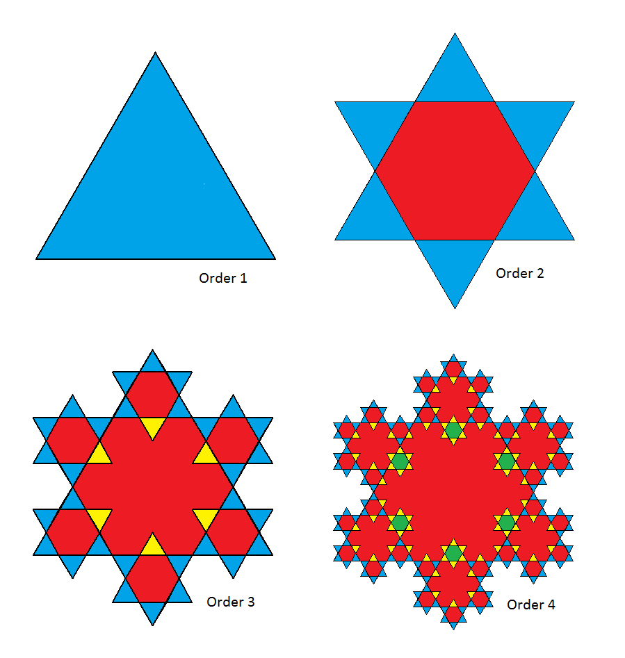

A snowflake of order $n$ is formed by overlaying an equilateral triangle (rotated by $180$ degrees) onto each equilateral triangle of the same size in a snowflake of order $n-1$. A snowflake of order $1$ is a single equilateral triangle.

Some areas of the snowflake are overlaid repeatedly. In the above picture, blue represents the areas that are one layer thick, red two layers thick, yellow three layers thick, and so on.
For an order $n$ snowflake, let $A(n)$ be the number of triangles that are one layer thick, and let $B(n)$ be the number of triangles that are three layers thick. Define $G(n) = \gcd(A(n), B(n))$.
E.g. $A(3) = 30$, $B(3) = 6$, $G(3)=6$.
$A(11) = 3027630$, $B(11) = 19862070$, $G(11) = 30$.
Further, $G(500) = 186$ and $\sum_{n=3}^{500}G(n)=5124$.
Find $\displaystyle \sum_{n=3}^{10^7}G(n)$.
solve(max_order=10) → ?solve(max_order=10000000) → ?